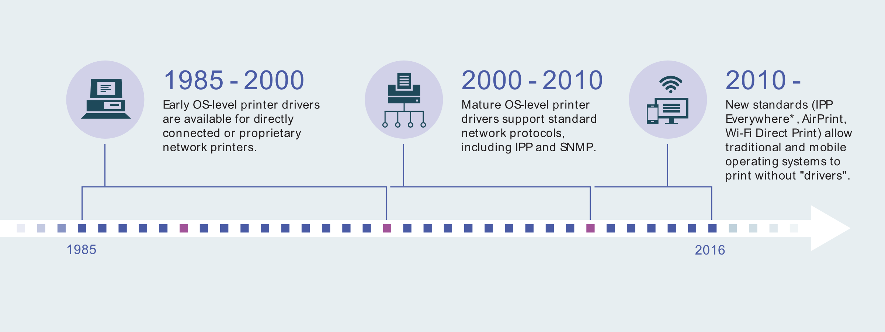
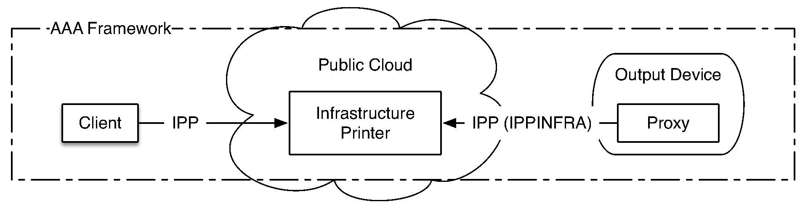

IPP Everywhere™
 IPP Everywhere™
IPP Everywhere™A PWG standard that allows personal computers and mobile devices to find and print to networked and USB printers without using vendor-specific software.
A PWG standard that allows personal computers and mobile devices to find and print to networked and USB printers without using vendor-specific software.
Today’s IPP printers offer state-of-the-art printing capabilities, output quality, and ease of use without the need to download and install driver software or configure print queues.
Features: Printer discovery, full range of print media, 2-sided printing, photo printing, finishers (stapling, punching, folding, etc.), and more!

Many clients already support IPP Everywhere. For those that don’t, operating system and desktop environment developers can leverage existing open source software to quickly provide IPP Everywhere printing support.
Popular clients: Android, ChromeOS, CUPS, Linux, macOS
98% of all printers sold today support IPP/2.0 and DNS-SD. Support generic file formats to enable IPP Everywhere printing.
Required: IPP/2.0, DNS-SD, PWG Raster Format and JPEG
Recommended: PDF, IPP-USB
Cloud, enterprise, and managed print services can utilize the IPP Shared Infrastructure Extensions to act as an intermediary between clients and printers. Clients continue to use the same printing interface while printers use the “proxy” interface provided by the print service to collect print jobs as needed.
Features: Cloud printing, centralized accounting and access control, “release” printing
